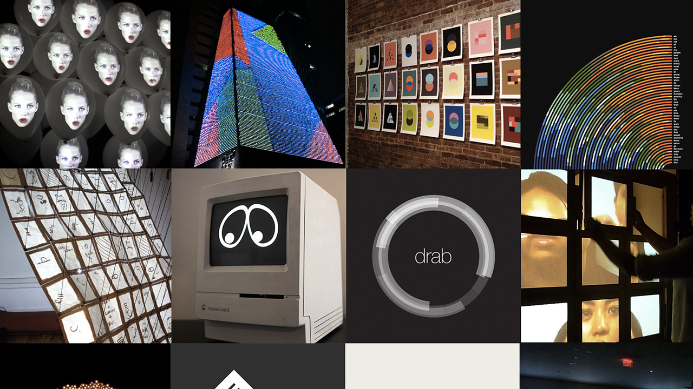
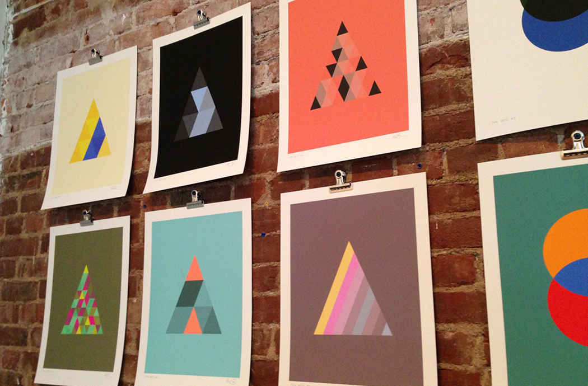

Meta-design
and algorithmic design systems
Rune Madsen
@runemadsen / runemadsen.com
Art, design, computation
Printing Code
Design Profession
It’s important to use your hands, this is what distinguishes you from a cow or a computer operator
What is meta-design?
Meta-design is much more difficult than design; it’s easier to draw something than to explain how to draw it.
Factors
1. Dynamic design products
2. A new generation of designers
3. Algorithmic design tools
4. Design history
Examples
Fugue logo
Sagmeister & Walsh

Function engineering logo
Sagmeister & Walsh
MIT Media Lab logo
Pentagram